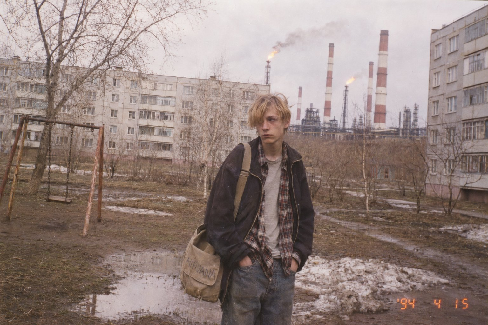

Денис. Нижнекамск, апрель 1994

Со своего балкона на восьмом этаже Денис видел три факела. Четвёртый, если высунуться и повернуть голову влево до хруста в шее, тоже было видно, но только краешек, рыжий отсвет над крышей соседней девятиэтажки. Факелы горели всегда, сколько он себя помнил, днём и ночью, зимой и летом, и пламя на них было разное: то ровное и спокойное, как огонёк газовой конфорки, только огромный, то вдруг рвалось вверх и в сторону, будто кто-то на него дул. Мама говорила, что, когда пламя рвётся, на комбинате что-то сбрасывают. Отец говорил, что ничего не сбрасывают, просто ветер.
Ветра в тот вечер не было, а пламя рвалось.
Денис стоял на балконе в куртке поверх майки, курил отцовскую «Приму», которую стащил из пачки на холодильнике, и слушал кассету. Магнитофон, старую «Весну», он поставил на табуретку у балконной двери, а провод от наушников был короткий, и потому стоять приходилось, пригнувшись к двери, как будто подслушиваешь. Наушники были тоже старые, советские, с жёсткой дужкой, которая давила на уши так, что через полчаса уши начинали гореть. Он терпел.
Кассету ему переписал в январе Айдар, а Айдару переписал старший брат Ильдар, который учился в Казани, а Ильдару кто-то в общаге, и кто переписывал тому, никто уже не знал. Запись была седьмой копией или десятой. На обложке, вырванной из тетради в клетку, Айдар написал шариковой ручкой: «NIRVANA. NEVERMIND» и ниже, уже Денисовым почерком, названия песен, которые Денис переписал из журнала в библиотеке. В журнале была фотография настоящей обложки: голый младенец под водой плывёт за долларом на рыболовном крючке. Библиотекарша, Зоя Степановна, заметила, как он взялся за край страницы, и сказала, что если он вырвет лист, она запишет весь журнал на его маму. Денис отпустил страницу. Он переписал всё от руки, в том числе подпись под фотографией, мелкими буквами, которые не все понимал.
На третьей песне плёнка в одном месте была растянута, и там, где звучало вступление, переливчатое, как вода, ноты на секунду уплывали вниз и тянулись, как жвачка, а потом становились на место, и вместе с ними появлялся тонкий свист, как от комара. Денис знал это место наизусть, ждал его каждый раз и каждый раз ёжился. Он уже не мог представить, как эта песня звучит без свиста. Иногда ему казалось, что свист и есть самое главное в ней, что Кобейн так и задумал: чтобы в середине было что-то неправильное, за что цепляется ухо. Он понимал, что это глупость, но думать так ему нравилось.
Факел справа снова рванулся вверх и опал. Внизу, у подъезда, кто-то пьяный пел, громко, без мелодии, и Денис прибавил звук.
⁂
В школе на третьем уроке был татарский. Татарский вела Фания Габдулловна, маленькая, в больших очках, которая называла всех по фамилии и строго. Татарский ввели у них в классе три года назад, и с тех пор Денис так и не научился ни читать, ни говорить, и Фания Габдулловна давно махнула на него рукой. Она ставила ему тройки за то, что он сидит тихо и не мешает. Сидел он всегда тихо.
— Гриценко, — сказала она, листая журнал. — К доске.
Денис вышел к доске. Фания Габдулловна посмотрела на него поверх очков и вздохнула.
— Прочитай текст на странице сорок.
Денис открыл учебник, посмотрел на текст и стал читать. Читал он, наверное, ужасно, потому что Айдар с третьей парты, татарин, который, в отличие от Дениса, говорил по-татарски с бабушкой каждые выходные, прикрыл лицо рукой и затрясся. Фания Габдулловна дослушала до середины и сказала:
— Хватит. Садись. Три.
— Почему три? — спросил Денис. Спросил не потому, что ему было жалко тройки, а просто так. Ему было интересно, что она скажет.
— Потому что старался, — сказала Фания Габдулловна. — А если перестанешь стараться, будет два. Садись.
Он сел. Слева от него Ленка Хабибуллина нарисовала на полях тетради сердечко и пронзила его стрелой. Ленка рисовала сердечки на всех уроках. Денис смотрел в окно. Из окна была видна только соседняя школа, такая же, белая, с синими полосами под окнами, и между школами — пустырь, на котором сходил снег, обнажая прошлогоднюю траву, бутылки и чью-то калошу. Он смотрел на калошу. Калоша лежала там с ноября: он видел, как её заносило снегом, и теперь видел, как она вылезает из-под снега обратно. Ему было почему-то приятно, что калоша дожила до весны.
После уроков Айдар догнал его у раздевалки.
— Чего ржал? — спросил Денис.
— Ты читаешь, как будто тебя бьют. «Мин... мин... мин...» — Айдар изобразил, заикаясь. — Как будто ты не знаешь, что «мин» — это «я».
— Я знаю, что «мин» — это «я».
— Ну так и говори нормально.
— Мне не надо, — сказал Денис. — Я не татарин.
— А кто ты?
Денис хотел сказать, что русский, но сказал:
— Никто. Я вообще отсюда.
Айдар засмеялся и хлопнул его по плечу.
— Ладно, «никто». В пять у Вадика, не забудь.
⁂
У Вадика собирались по средам и субботам, в подвале его дома, где отец Вадика, электрик в ЖЭКе, держал ключ от щитовой и разрешал там сидеть, если они ничего не трогают. В щитовой стояли старые стулья, верстак, на котором лежали мотки проводов, и пахло пылью и чем-то кислым. Под потолком висела одна лампочка, без плафона. Свет от неё был жёлтый и злой.
Гитара у Дениса была своя, «Урал», электрическая, тяжёлая, как топор. Отец купил её ему на день рождения в прошлом году, у мужика с работы, и Денис до сих пор не знал, сколько отец за неё заплатил, потому что отец не говорил, а мама, когда Денис спросил её, только поджала губы и сказала: «Сколько надо, столько и заплатил». Усилителя к гитаре не было. Денис подключал её через старый магнитофон «Электроника», у которого Вадиков отец перепаял вход, и звук получался такой, будто кто-то ругается через телефонную трубку. Но звук был громкий, и Денису этого хватало.
Айдар играл на басу, на самодельном, из такого же «Урала», с которого Ильдар снял две струны и как-то перетянул остальные. Басом это можно было назвать только из вежливости, но гудел он низко, и Денис был рад, что внизу хоть что-то есть. Вадик сидел за «барабанами»: пионерский барабан, позаимствованный из школьной кладовки, крышка от бака для белья вместо тарелки и две картонные коробки, по которым он бил палками от швабры. Пел тоже Вадик. Больше было некому.
Пел Вадик плохо. Вадик это знал, Денис знал, Айдар знал, и все молчали, потому что если сказать, то Вадик обидится, а без Вадика не будет щитовой. Вадик не попадал в ноты, и голос у него ломался, то срывался в писк, то проваливался в басы, как будто там, внутри, Вадик сам не мог решить, кем ему быть, ребёнком или мужиком. И слов он не знал. Слов не знал никто из них, английский в школе им преподавали по учебнику, где герои ходили в магазин и покупали хлеб и ни разу не пели. Вадик пел то, что слышал. Это было похоже на английский примерно так же, как Вадиковы коробки на барабаны.
Денису было за Вадика стыдно, но не так, как бывает стыдно за друга, а по-другому: ему было стыдно за песню. Как будто песня была чья-то знакомая, и при ней Вадик говорил глупости, а Денис стоял рядом и ничего не делал. Каждый раз, когда Вадик открывал рот, Денис играл громче. Гитара через магнитофон хрипела, и в этом хрипе Вадика почти не было слышно. Это было лучшее, что он мог сделать.
В ту субботу, девятого, они репетировали «Come as You Are», в шестой или седьмой раз. Денис сыграл вступление, то самое, переливчатое, — на «Урале» через магнитофон оно было совсем не как вода, а как будто кто-то бил ложкой по ржавой трубе, но ноты были те. Айдар вступил басом. Вадик стал отсчитывать палками, сбился, начал заново.
И тут дверь в щитовую открылась, и вошёл Ильдар.
Ильдар не должен был быть в Нижнекамске: он учился в Казани и приезжал только на выходные раз в месяц. Значит, приехал. Он стоял в дверях, высокий, в длинном чёрном пальто, которое было ему велико, и с мокрыми волосами, потому что на улице шёл дождь со снегом.
— Вы чего тут играете? — спросил он.
— Нирвану, — сказал Айдар.
Ильдар постоял и сказал:
— Кобейн умер.
Денис не понял. То есть понял слова, но не понял, к чему они. Как если бы Ильдар сказал: «Кама потекла вверх».
— Чего? — спросил Вадик.
— Кобейн умер. Покончил с собой. У себя дома, в Америке. Нашли вчера. По радио передавали, в Казани, мужики в общаге слышали. — Ильдар потёр лицо рукой, мокрой от дождя. — Я вам говорю, потому что вы его слушаете. Мне вот сказали, я и вам.
— Не может быть, — сказал Денис.
— Может, — сказал Ильдар.
— А почему тогда по телевизору не сказали?
— Откуда я знаю. Может, говорили. Может, ты не смотрел.
Денис смотрел. Он смотрел вчера весь вечер, вместе с отцом, «Поле чудес», а потом рекламу МММ, где Лёня Голубков рассказывал, как купил жене сапоги, а потом новости. В новостях было про Ельцина и про Думу и ни слова про Кобейна.
— Это ерунда, — сказал он. — Это кто-то в общаге наврал.
— Ну, считай, что ерунда, — сказал Ильдар, пожал плечами и ушёл, оставив дверь открытой. С улицы в щитовую потянуло мокрым холодом.
Они стояли молча. Вадик держал палки от швабры. Айдар посмотрел на Дениса, потом на Вадика, потом на свой бас.
— Ну, играем? — спросил Вадик.
— Иди ты, — сказал Денис и выдернул шнур из магнитофона.
⁂
Дома было тихо. Мама работала в ночь: она была медсестрой в городской больнице, в хирургии, и в ночь работала часто, потому что за ночь доплачивали. Отец сидел перед телевизором в майке и в тренировочных штанах и смотрел футбол. Отец смотрел футбол всегда, любой, даже если играли команды, о которых он ничего не знал.
— Пап, — сказал Денис, стоя в дверях комнаты.
— А? — сказал отец, не оборачиваясь.
— Кобейн умер.
— Кто?
— Кобейн. Из «Нирваны». Которых я слушаю.
Отец обернулся. Посмотрел на Дениса, потом на телевизор, потом снова на Дениса.
— Наркоман этот? — спросил он.
— Он не наркоман.
— Ну, мне так говорили. — Отец пожал плечами. — Жалко, конечно. Молодой, наверное?
— Двадцать семь.
— Молодой, — согласился отец. И, помолчав, добавил то ли Денису, то ли телевизору: — Добре, что не наш.
Денис не понял, что значит «не наш». Не наш, потому что американец? Или не наш, потому что не из их семьи? Или не наш, потому что из чужого мира, к которому отец никакого отношения не имел? Он хотел спросить, но отец уже снова смотрел футбол, и на экране кто-то бежал по полю, а кто-то кричал. Отец говорил «добре» иногда, когда был доволен или когда устал. Больше ничего украинского в отце не было, только это слово, фамилия и бабушка Ганна, которую Денис видел один раз, летом, когда ему было десять, в селе под Полтавой. Бабушка кормила его варениками с вишней, гладила по голове и говорила по-своему, певуче, и Денис понимал не всё, но понимал, что его любят. Больше они туда не ездили. Отец говорил, что далеко, что дорого и что теперь там другая страна.
Денис ушёл к себе, лёг на кровать, не раздеваясь, и поставил кассету. Перемотал на третью песню. Дождался свиста.
Свист был на месте. Кобейн пел. Пел так, как пел всегда: устало, будто через силу, будто ему уже надоело всё это объяснять, но он почему-то объясняет снова. Денис слушал и пытался представить, что этого голоса больше нет. Что где-то в Америке, в доме, который он никогда не увидит, лежит человек, который это пел, и больше не будет петь. Представить не получалось. Голос был здесь, в наушниках, тёплый и хриплый, живой. Плёнка крутилась. Свист появился и пропал, как всегда.
Он перемотал назад и послушал ещё раз.
Он не плакал. Ему было не до слёз, слёзы были чем-то детским, а это было не детское. Это было такое чувство, будто из комнаты вынесли шкаф, который стоял там всю жизнь, и теперь на обоях светлый прямоугольник, и ты всё время на него смотришь, хотя смотреть там не на что. Он лежал и смотрел в потолок, и думал, что ещё вчера ничего не знал, и Кобейн, наверное, был уже мёртв, но для Дениса он был живой, и вчера весь вечер, пока он смотрел «Поле чудес» и рекламу МММ, Кобейн для него был жив. А сегодня нет. И никакой разницы в Кобейне за это время не произошло. Произошла разница только в Денисе.
Это было непонятно и очень обидно.
⁂
Мама вернулась утром, в начале девятого. Денис слышал, как она открывает дверь, как снимает в коридоре сапоги, как идёт на кухню и ставит чайник. Он встал и вышел к ней.
Мама сидела за кухонным столом, в халате, который надевала после смены, ещё не умывшись, с серым лицом. После ночи в хирургии у неё всегда было такое лицо, будто из неё что-то выпили. Она подняла на него глаза.
— Ты чего не спишь? Воскресенье.
— Не спится.
Он сел напротив. Мама налила ему чаю, себе тоже, подвинула сахарницу. Он насыпал три ложки и стал размешивать.
— У тебя что-то случилось? — спросила мама.
Он хотел сказать «нет». Он почти всегда говорил «нет». Но в это утро, на кухне, где пахло чаем и больничным мылом от маминых рук, он вдруг сказал:
— Кобейн умер.
Мама не спросила «кто». Она знала. Она видела на стене в его комнате вырезку из журнала, которую он приклеил скотчем: трое парней, один из которых, светловолосый, смотрел в объектив из-под чёлки. Она один раз спросила, кто это, и он сказал, и она запомнила.
— Ох, — сказала мама. — Сынок.
Она протянула руку через стол и положила её на его руку. Рука была холодная и пахла мылом. Денис не отнял свою.
— Отчего? — спросила мама.
— Сам, — сказал Денис.
Мама помолчала. Потом сказала:
— У нас сегодня ночью мальчик был. Восемнадцать лет. Тоже сам. Его успели.
Денис посмотрел на неё. Мама смотрела в чашку.
— Я тебе зачем это говорю, — сказала она, — не знаю. Просто. Устала.
— Мам.
— Что?
— Ничего.
Она погладила его руку и встала. Сказала, что пойдёт поспит, а он пусть поест, там в холодильнике котлеты. Он кивнул. Она ушла в спальню и закрыла дверь, и Денис остался на кухне один, и сидел так долго, что чай остыл.
Он думал о мальчике, которого успели. Восемнадцать. Он не знал, кто это, и не узнает никогда. Но этот мальчик был здесь, в Нижнекамске, где-то совсем рядом, может быть, в соседнем доме, может, он ходил в его же школу и Денис видел его на линейке. И этот мальчик, восемнадцати лет, сделал то же самое, что сделал Кобейн, только его успели, а Кобейна нет. И Денису впервые пришло в голову, что Кобейн, наверное, тоже был когда-то просто мальчиком в каком-нибудь маленьком городе, где некуда деться и где над крышами что-нибудь горит, и что этот город был ему так же противен, как Денису его Нижнекамск.
Мысль была страшная, и он её не додумал. Он встал, положил на сковородку котлету и включил газ.
⁂
Через неделю Ильдар привёз из Казани газету. Газета была московская, старая, прошлой недели, и в ней на последней странице, внизу, в колонке, где обычно печатали всякую мелочь, была заметка в три абзаца и маленькая фотография, такая тёмная, что лицо на ней было не разобрать. Заметка была написана сухо и немного свысока, как пишут про заграничные странности: лидер американской группы, кумир молодёжи, тяжёлые наркотики, тело обнаружено. Денис прочитал её три раза. Потом вырезал ножницами и вложил в коробку из-под кассеты, между обложкой и пластиком. Газету Ильдар забрал обратно: она была не его.
Теперь это была правда. Пока об этом говорили только Ильдаровы мужики в общаге, оставалась надежда, что кто-то наврал, перепутал, что это шутка. А газета не шутила. Газета была скучная, серая, и в этой скуке была окончательность, с которой не поспоришь.
В тот же день, в среду, Денис пришёл в щитовую первым. Вадик опоздал на полчаса, Айдар на десять минут. Они сели на стулья, Денис взял гитару и стал её настраивать, хотя она была настроена. Айдар сидел с басом на коленях и ничего не делал. Вадик постукивал палкой от швабры по коробке.
— Слушайте, — сказал Вадик. — Я вот что думаю.
Денис ждал. Он знал, что Вадик скажет что-то не то.
— Я думаю, может, бросить это всё. Ну, «Нирвану». Раз его нет. Это как-то... — Вадик пошевелил палкой в воздухе, подбирая слово. — Не по-человечески как-то. Играть мертвеца. Давай что-нибудь наше. «Кино» там. Или «Алису».
— «Кино» тоже мертвец, — сказал Айдар.
— Ну, «Алису».
— Я «Алису» не умею, — сказал Денис.
— А я «Нирвану» петь не умею, — сказал Вадик неожиданно и твёрдо. — Ну правда. Вы же слышите. Вы же оба слышите, что я не умею. Я ж не глухой. Я, может, не умею петь, но я же слышу, как вы на меня смотрите.
Стало тихо. Под потолком гудела лампочка. Денис смотрел на Вадика, и ему впервые за все эти месяцы было Вадика жалко по-настоящему, а не за песню.
— Ну и не пой, — сказал Айдар. — Барабань.
— А кто петь будет?
Айдар посмотрел на Дениса. Вадик тоже посмотрел на Дениса. Денис смотрел на свою гитару.
— Я не умею, — сказал он.
— А ты пробовал? — спросил Айдар.
Денис не пробовал. То есть пробовал: дома, когда никого не было, на балконе, тихо, себе под нос, так что сам себя едва слышал. И в ванной, когда шумела вода. Но вслух, при ком-то, никогда. Петь при ком-то было всё равно что раздеться. Он знал, что у него голос есть: он слышал его в ванной, низкий и немного хриплый, совсем не похожий на Кобейна, но слышал и то, что этот голос попадает. Он попадал. Он знал это так же, как знал, где на грифе какая нота.
Он молчал долго. Потом сказал:
— Ладно. Только не смотрите.
— В смысле? — спросил Вадик.
— Отвернитесь, — сказал Денис. — Оба. К стене.
Вадик хмыкнул, но отвернулся. Айдар тоже. Теперь они сидели спинами к нему, как будто наказанные, и Денис видел их затылки: стриженый, белобрысый Вадиков и чёрный, кудрявый Айдаров. Под лампочкой эти затылки были жёлтые.
Он сыграл вступление. Переливчатое, ржавое через магнитофон. Айдар, не оборачиваясь, вступил басом. Вадик стукнул палкой по коробке и тоже стал играть, спиной к ним, нащупывая ритм вслепую, и, странное дело, впервые попал.
Денис запел.
Слов он не знал, как и Вадик. Пел то, что слышал, звуки, похожие на английские. Но голос шёл туда, куда надо, вниз и вверх, по той же лестнице, по которой ходил Кобейн, только на свой лад, ниже и тяжелее. И, в отличие от Вадикова, Денисов голос не боялся. Он сам удивился: голосу было не страшно. Страшно было только ему, Денису, а голос пел так, будто ему вообще всё равно, слушает его кто-нибудь или нет.
Он допел до конца. Последний аккорд прохрипел через магнитофон и затих. Лампочка гудела.
Айдар и Вадик сидели спинами к нему и молчали.
— Ну? — сказал Денис.
Вадик обернулся первым. У него было странное лицо: обиженное и довольное одновременно.
— Ну ты гад, — сказал он. — Чего молчал-то?
⁂
Вечером Денис опять стоял на балконе. Мама сегодня была дома. Отец ушёл к соседу смотреть по видику какой-то боевик. Мама мыла посуду на кухне, и через приоткрытую балконную дверь Денис слышал, как звякают тарелки и шумит вода.
Он не стал надевать наушники. Он просто стоял и смотрел на факелы. Их было три. Если высунуться и повернуть голову до хруста, то четыре. Пламя сегодня было ровное, ветра не было, и рыжий свет лежал на нижних облаках, на крышах девятиэтажек, на пустыре, где таял снег, и на всём этом городе, который Денис ненавидел. Ненавидел за то, что здесь нечем дышать, за серые дома, за «Приму» в отцовской пачке, за калоши на пустыре, за то, что отсюда никуда, кроме Казани, а в Казани то же самое, только больше. За то, что здесь никто не поймёт, почему из комнаты вынесли шкаф. Он смотрел на город, на свой город, и ненавидел его так сильно, что от этого становилось тепло, как от этих же факелов.
Он запел. Тихо, почти шёпотом, ту же песню, которую пел днём в щитовой. Звуки, похожие на английские. Голос шёл вниз и вверх по той же лестнице.
На кухне перестала шуметь вода.
Денис замолчал. Постоял. Потом обернулся.
Мама стояла в проёме балконной двери, с полотенцем в руках, и смотрела на него. Он ждал, что она скажет что-нибудь. «Ты бы оделся, простудишься». Или: «Не кури, я же вижу». Или: «Это та твоя песня?»
Мама не сказала ничего. Она постояла, вытирая руки полотенцем, медленно, палец за пальцем, как будто руки у неё были очень мокрые. Потом кивнула и ушла обратно на кухню. Через секунду снова зашумела вода.
Денис отвернулся к факелам и допел до конца.